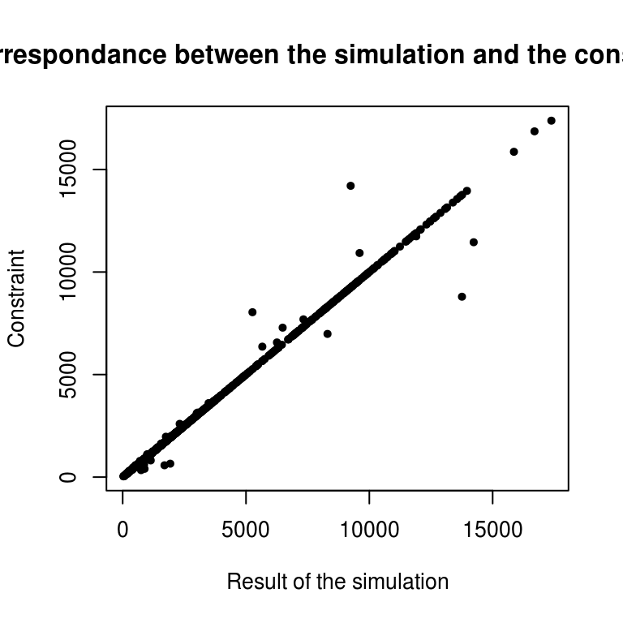
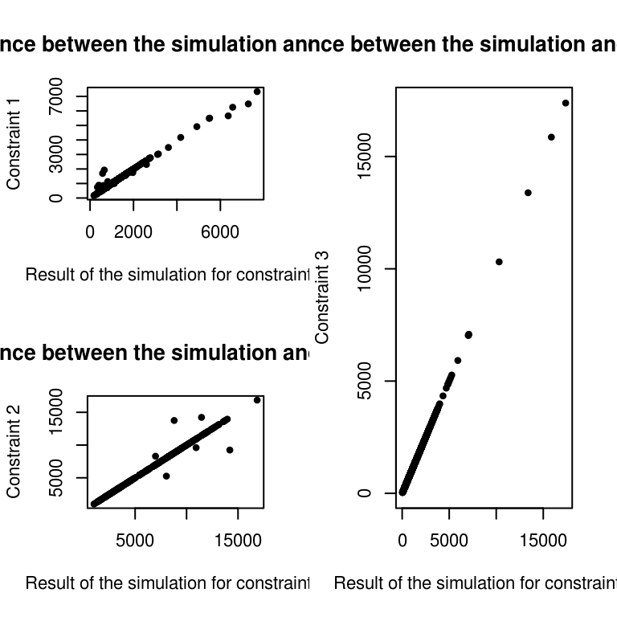
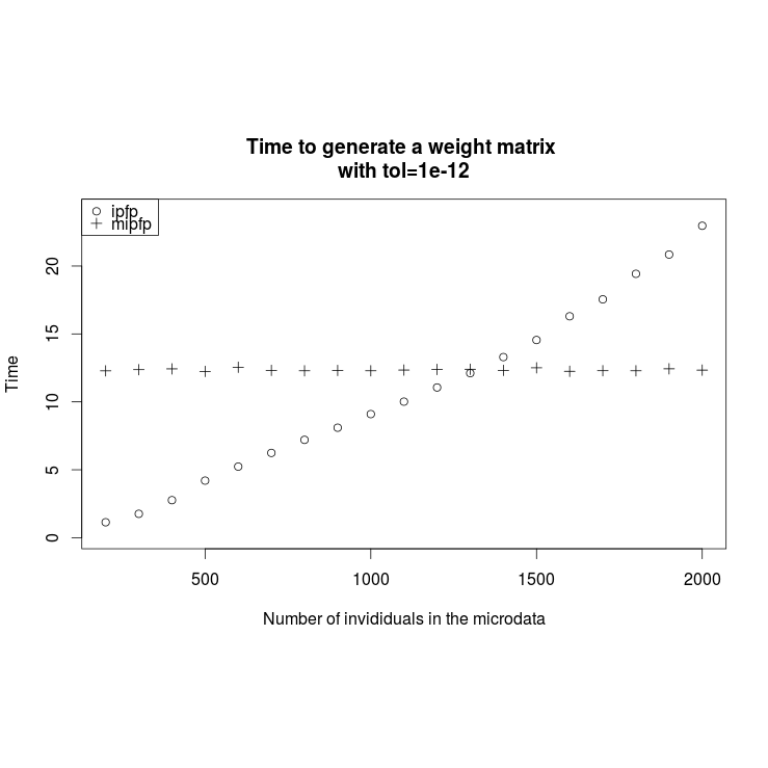

Spatial microsimulation in the wild
By now we have developed a good understanding of what spatial microsimulation is, its applications and how it works. We have seen something of its underlying theory and its implementation in R. But how can the method be applied ‘in the wild’, on real datasets?
The purpose of this chapter is to answer this question using real data to estimate cake consumption in different parts of Leeds, UK. The example is deliberately rather absurd to make it more memorable. The steps are presented in a generalisable way, to be applicable to a wide range of datasets.
The input microdataset is a randomized (‘jumbled’) subset of the 2009 Dental Health Survey, (DHS) which covers England, Northern Ireland and Wales. 1173 variables are available in the DHS, many of which are potentially interesting target variables not available at the local level. These include weekly income, plaque buildup, and oral health behaviours. Potential linking variables include socio-economic classification, and dozens of variables related to oral health.
In terms of constraint variables, we are more limited: the Census is the only survey that provides count data at the small area level in the UK. Thus the ‘domain’ of available input data, related to our research question involves two sources:
- Non-geographical individual-level survey, DHS — the microdata.
- Geographically aggregated categorical count data from the census — the constraint tables.
As discussed in Chapter must first decide which variables should be used to link the two. We must select the constraints from available linking variables.
Selection of constraint variables
The selection of linking variables should not be arbitrary pre-ordained by preconceptions. The decision of which constraints to use to allocate individuals to zones should be context dependent. If the research is on social exclusion, for example, many variables could potentially be of interest: car ownership, house tenancy, age, gender and religion could all affect the dependent variable. Often constraint variables must be decided not based on what would be ideal, but what datasets are available. The selection criteria will vary from one project to the next, but there are some overriding principles that apply to most projects:
More the merrier: each additional constraint used for will further differentiate the spatial microdata from the input microdata. If gender is the only constraint used, for example, the spatial microdata will simply be a repetition of the input microdata but with small differences in the gender ratio from one zone to the next. If five constraints are used (e.g. age, gender, car ownership, tenancy and religion), the differences between the spatial microdata from one zone to the next will be much more pronounced and probably useful.
Relevance to the target variable: often spatial microsimulation is used to generate local estimates of variables about which little geographically disaggregated information is available. Income is a common example: we have much information about income distributions, but little information about how average values (let alone the distribution) of income varies from one small area to the next. In this case income is the target variable. Therefore constraints must be selected which are closely related to income for the output to resemble reality. This is analogous to multiple regression (which can also be used to estimate average income at the local level), where the correct explanatory variables (i.e. constraint variables in spatial microsimulation) must be selected to effectively predict the dependent variable. As with regression models, there are techniques which can be used to identify the most suitable constraint variables for a given target variable.
Simplicity: this criterion to some extent contradicts the first. Sometimes more constraints do not result in better spatial microdata and problems associated with ‘over-fitting’ can emerge. Spatial microsimulation models based on many tens of constraint categories will take longer to run and require more time to develop and modify. In addition, the chances of an error being introduced during every phase of the project is increased with each additional constraint. The extent to which increasing the number of constraint categories improves the results of spatial microsimulation, either with additional variables or by using cross-tabulated constraints (e.g. age/sex) instead of single-variable constraints, has yet to be explored. It is therefore difficult to provide general rules of thumb regarding simplicity other than ‘do not over-complicate the model with excessive constraint variables and constraints’.
So, we always need to reach an equilibrium between these principles. Indeed, we have to take into account enough and pertinent variables, without making the population synthesis process too complex
To exemplify these principles, let us consider the constraint variables available in the CakeMap datasets. Clearly only variables available both in the individual-level and aggregate-level datasets can be chosen from. Suppose our aim is to analyze the consumption of cakes depending on sociodemographic variables. Five interesting variables assigned to each of the 916 individuals are available from the individual-level data :
- ‘Car’: The number of working cars in the person’s household.
- ‘Sex’ and ‘ageband4’: Gender and age group, in two separate variables. Age is divided into 6 groups ranging from ‘16–24’ to ‘65–74’.1
- ‘NSSEC’: National Statistics Socio-economic Classification: an categorical variable classifying the individual’s work into one of 10 groups including ‘97’, which means ‘no answer’ (
NA). - ‘NCakes’: the target variable, reported number of times that the respondent consumes cake each week.
All of these variables, except for ‘NCakes’, have a corresponding constraint variable to be loaded for the 124 Wards that constitute the Leeds Local Authority in the UK. In real datasets it is rarely the case that the categories of the individual and aggregate level data match perfectly from the outset. This is the first problem we must overcome before running a spatial microsimulation model of cake consumption in Leeds.
The code needed to run the main part of the example is contained within ‘CakeMap.R’. Note that this script makes frequent reference to files contained in the folder ‘data/CakeMap’, where input data and processing scripts for the project are stored.
Preparing the input data
Often spatial microsimulation is presented in a way that suggests the data arrived in a near perfect state, ready to be inserted directly into the model. This is rarely the case: usually, one must spend time loading the data into R, dealing with missing values, re-coding categorical variables and column names, binning continuous variables and subsetting from the microdataset. In a typical project, data preparation can take as long as the analysis stage. This section builds on Chapter 3 to illustrate strategies for data cleaning on a complex project. To learn about the data cleaning steps that may be useful to your data, we start from the beginning in this section, with a real (anonymised) dataset that was downloaded from the internet.
The raw constraint variables for CakeMap were downloaded from the Infuse website (http://infuse.mimas.ac.uk/). These, logically enough, are stored in the ‘cakeMap/data/’ directory as .csv files and contain the word ‘raw’ in the file name to identify the original data. The file ‘age-sex-raw.csv’, for example is the raw age and sex data that was downloaded. As the screenshot in Figure 6.1 illustrates, these datasets are rather verbose and require pre-processing. The resulting ‘clean’ constraints are saved in files such as ‘con1.csv’, which stands for ‘constraint 1’.

To ensure reproducibility in the process of converting the raw data into a form ready for spatial microsimulation, all the steps have been saved. Take a look at the R script files ‘process-age.R’, ‘process-nssec.R’ and ‘process-car.R’. The contents of these scripts should provide an insight into methods for data preparation in R. Wickham (2014b) provides a more general introduction to data reformatting. The most difficult input dataset to deal with, in this example, is the age/sex constraint data. The steps used to clean it are saved in ‘process-age.R’, in the data/CakeMap/ folder. Take a look through this file and try to work out what is going on: the critical stage is grouping single year age bands into larger groups such as 16–24.
The end result of ‘process-age.R’ is a ‘clean’ .csv file, ready to be loaded and used as the input into our spatial microsimulation model. Note that the last line of ‘process-age.R’ is write.csv(con1, "con1.csv", row.names = F). This is the first constraint that we load into R to reweight the individual-level data in the next section. The outputs from these data preparation steps are named ‘con1.csv’ to ‘con3.csv’. For simplicity, all these were merged (by ‘load-all.R’) into a single dataset called ‘cons.csv’. All the input data for this section are thus loaded with only two lines of code:
ind <- read.csv("data/CakeMap/ind.csv")
cons <- read.csv("data/CakeMap/cons.csv")Take a look at these input data using the techniques learned in the previous section. To test your understanding, try to answer the following questions:
- What are the constraint variables?
- How many individuals are in the survey microdataset?
- How many zones will we generate spatial microdata for?
For bonus points that will test your R skills as well as your practical knowledge of spatial microsimulation, try constructing queries in R that will automatically answer these questions.
It is vital to understand the input datasets before trying to model them, so take some time exploring the input. Only when these datasets make sense (a pen and paper can help here, as well as R!) is it time to generate the spatial microdata.
As explained in the previous chapters, there are different methods to perform a spatial microsimulation. We will here use a reweighting method, since we have spatial aggregated data and non spatial individual data, both containing some common variables. In this category, the more often used and intuitiv method is the IPF.
We mentionned in the SimpleWorld example that there are two different points of view of IPF. First, weights are assigned to each individual for each zone (ipfp package). Second, weights are assigned to each possible category of individuals for each zone (mipfp package). The next sections developp the whole procedure with each package.
Using the ipfp package
Performing IPF on CakeMap data
The ipfp reweighting strategy is concise, generalisable and computationally efficient. On a modern laptop, the ipfp method was found to be almost 40 times faster than the ‘IPFinR’ method (section 4.1; Lovelace, 2014) over 20 iterations on the CakeMap data, completing in 2 seconds instead of over 1 minute. This is a huge time saving!2
Thanks to the preparatory steps described above, the IPF stage can be run on a single line. After the datasets are loaded in the first half of ‘CakeMap.R’, the following code creates the weight matrix:
#>
#> Attaching package: 'dplyr'
#>
#> The following object is masked from 'package:stats':
#>
#> filter
#>
#> The following objects are masked from 'package:base':
#>
#> intersect, setdiff, setequal, unionweights <- apply(cons, 1, function(x)
ipfp(x, ind_catt, x0, maxit = 20))As with the SimpleWorld example, the correlation3 between the constraint table and the aggregated results of the spatial microsimulation can be checked to ensure that the reweighting process has worked correctly. This demonstrates that the process has worked with an r value above 0.99:
cor(as.numeric(cons), as.numeric(ind_agg))
#> [1] 0.9969This value is very close to 1, so we can consider that there is a big linear correlation between the result and the constraint. We can verify it by plotting:

With the best fit, we would have all constraints equal to the simulation, so a perfect line (this is why we consider a linear correlation). Only few points are outside the area of the line. Note that we have 1,623,797 inhabitants4 in the simulation and in the constraints, con1and con2 have 1,623,800, while con3 contains 1,623,797. As seen before, with IPF, the result depends on the order of the constaints. Thus, it is logical to put as last constraint one really reliable, also in terms of total number of people. An alternative is to rescale all constraints to be consistence. This will be done in the next section, with mipfp and in the comparison for ipfp.
For the comparison category per category, we can take the absolute value of the differences of the two table. This gives a table of differences. The worst category and zone will be the maximum of this matrix.
# Maximum error
max(abs(ind_agg-cons))
#> [1] 4960
# Index of the maximum error
which(abs(ind_agg-cons) == max(abs(ind_agg-cons)), arr.ind = TRUE)
#> row col
#> [1,] 84 13
#> [2,] 84 14The maximum error is now know and corresponds to the zone 84 and 13 columns of the constraints, which is Car.
This is for the basic validation, a more detailed analysis of the quality of the results is present in the next chapter.
Integerisation
As before, weights of the IPF procedure are fractional, so must be integerised to create whole individuals. The code presented in chapter 4 requires little modification to do this: it is your task to convert the weight matrix generated by the above lines of code into a spatial microdataset called, as before, ints_df (hint: the int_trs function in ‘R/functions.R’ file will help). The spatial microdata generated in ‘R/CakeMapInts.R’ contains the same information as the individual-level dataset, but with the addition of the ‘zone’ variable, which specifies which zone each individual inhabits.
The spatial microdata is thus multilevel data, operating at one level on the level of individuals and at another at the level of zones. To generate summary statistics about the individuals in each zone, functions must be run on the data, one zone (group) at a time. aggregate provides one way of doing this. After converting the ‘NSSEC’ socio-economic class variable into a suitable numeric variable, aggregate can be used to identify the variability in social class in each zone. The by = argument is used to specify how the results are grouped depending on the zone each individual inhabits:
source("R/CakeMapInts.R")aggregate(ints_df$NSSEC, by = list(ints_df$zone), sd,
na.rm = TRUE)## Group.1 x
## 1 1 1.970570
## 2 2 2.027638
## 3 3 2.019839In the above code the third argument refers to the function to be applied to the input data. The fourth argument is simply an argument of this function, in this case instructing the standard deviation function (sd) to ignore all NA values. An alternative way to perform this operation, which is faster and more concise, is using tapply:
tapply(ints_df$NSSEC, ints_df$zone, sd, na.rm = TRUE)Note that operations on ints_df can take a few seconds to complete. This is because the object is large, taking up much RAM on the computer. This can be seen by asking object.size(ints_df) or nrow(ints_df). The latter shows we have created a spatial microdataset of 1.6 million individuals! Try comparing this result with the size of the original survey dataset ‘ind’. Keeping an eye on such parameters will ensure that the model does not generate datasets too large to handle.
Next chapter, we move on to a vital consideration in spatial microsimulation models such as CakeMap: model checking and validation. First, we developp the spatial microsimulation using mipfp.
Using the mipfp package
Performing IPF on CakeMap data
As in the previous section, the first stage is to load the data. An additional step required by the Ipfp function ensuring the categories of cons and ind correspond. In the variable associated with car ownership, ind contains “1” and “2”, but cons contains “Car” and “NoCar”.
To undertake this operation, we convert the category labels in the individual-level variable ind so that they conform to the variable names of the count data contained in constraint data cons. Continuing with the car ownership example, every “1” in ind$Car should be converted to “Car” and every “2” to “NoCar”. Likewise, the correct labels of “f” and “m” must be created for the Sex variable and likewise for the other variables in ind. The code that performs this operation is included in the R file CakeMapMipfpData.R file. Take a look at this file (e.g. by typing file.edit("R/CakeMapMipfpData.R") from RStudio) and note the use of the switch function in combination with the recursive function sapply to switch the values of the individual-level variables. The entire script is run below using the source command.
source("R/CakeMapMipfpData.R")The data are now loaded correctly. This can be verified by printing the first lines of of the individual-level data and comparing this with colnames(con1). Note that this step was not necessary for the ipfp package. To use **mipfp* the user must encode the constraints in the right order and only the order. In practice this is a good idea. Ensuring same variable names match category labels will help subsequent steps of for validation and interpretation. Moreover, the structure of some constraints will have to change and this process will be easier if the names are the same. To re-affirm our starting point, a sample of the new individual-level data is displayed below.
head(ind)
#> NCakes Car Sex NSSEC8 ageband4
#> 1 3-5 NoCar m X7 25_34
#> 2 1-2 NoCar f X2 55_64
#> 3 1-2 Car f X2 45_54
#> 4 6+ Car m X5 45_54
#> 5 1-2 NoCar m X2 45_54
#> 6 1-2 Car f X2 45_54Defining the initial weight matrix is the next step. For each zone, we simply take the cross table (or contingency table) of the individual data. It is important to check the order of the variables inside this table. We have in our case (NCakes, Car, Sex, NSSEC8, ageband4). This information will be necessary for the definition of the target and description for mipfp.
# Initial weight matrix for each zone
weight_init_1zone <- table(ind)
# Check order of the variables
dimnames(weight_init_1zone)
#> $NCakes
#> [1] "<1" "1-2" "3-5" "6+" "rarely"
#>
#> $Car
#> [1] "Car" "NoCar"
#>
#> $Sex
#> [1] "f" "m"
#>
#> $NSSEC8
#> [1] "X1.1" "X1.2" "X2" "X3" "X4" "X5" "X6" "X7"
#> [9] "X8" "Other"
#>
#> $ageband4
#> [1] "16_24" "25_34" "35_44" "45_54" "55_64" "65_74"To use the full power of the mipfp package, we choose to add the spatial dimension into the weight matrix instead of performing a for loop over the zones. For this purpose, we repeat the table for each area. We define the names of the new dimension and create an array with the correct cells and names.
# Adding the spatial dimension
# Repeat the initial matrix n_zone times
init_cells <- rep(weight_init_1zone, each = nrow(cons))
# Define the names
names <- c(list(rownames(cons)), as.list(dimnames(weight_init_1zone)))
# Structure the data
weight_init <- array(init_cells, dim =
c(nrow(cons), dim(weight_init_1zone)),
dimnames = names)#> Loading required package: cmm
#> Loading required package: Rsolnp
#> Loading required package: truncnorm
#> Loading required package: parallel
#> Loading required package: numDerivAn advantage of mipfp over ipfp is that the algorithm first checks the consistency of the constraints, before reweighting. If the total number of individuals in a zone is not exactly the same from one constraint to another, mipfp will return the following warning: ‘Target not consistents - shifting to probabilities!’ In this case, the cells of the resulting table become probabilities, such as the sum of all cells is 1. This means that the algorithm does not know how many people per zone you want. This is a very useful feature of mipfp: creating weights corresponding to the correct total population is as simple as multiply the probabilities by this number.
An alternative to this is to verify by your own the totals per zone and re-scale the constraints that are different from your purpose population. In our case, for each constraint, we calculate the number of persons in the zone. For each zone, we compare the totals of the different constraints. The result is TRUE if the totals are the same and FALSE otherwise. It gives nrow(cons) boolean values (TRUE or FALSE), of which we print the table.
# Check the constraint's totals per zone
table(rowSums(con2) == rowSums(con1))
#>
#> TRUE
#> 124
table(rowSums(con3) == rowSums(con1))
#>
#> FALSE TRUE
#> 72 52
table(rowSums(con2) == rowSums(con3))
#>
#> FALSE TRUE
#> 72 52Constraints 1 and 2 have exactly the same marginals per zone. Constraint 3 has 52 zones with different totals. Since NSSEC (con3) is anomolous in this respect we consider the totals of the two first constraints to be valid. To perform (non-probabilistic) reweighting with mipfp, we must first re-scale con3 to keep its proportions but with updated totals per zone.
# Re-scale the constraint 3
con3_prop <- con3 * rowSums(con2) / rowSums(con3)
# Check the new totals
table(rowSums(con2) == rowSums(con3_prop))
#>
#> TRUE
#> 124The rescaling operation above solved one problem, but there is another, more difficult-to-solve issue with the input data. The second and third constraints are simple marginals per zone with a single, clearly-defined variable each. The first constraint (con1), by contrast, is cross-tabulated, a combination of two variables (sex and age, or age/sex as cross-tabulations are often referred to as). We must change structure of the first constraint to execute mipfp.
# View the content of the first constraint
con1[1:3, 1:8]
#> m16_24 m25_34 m35_44 m45_54 m55_64 m65_74 f16_24 f25_34
#> 1 671 771 1033 1160 1165 772 679 760
#> 2 887 1254 1217 1344 1229 752 832 1169
#> 3 883 864 1195 1382 1170 878 811 962The result of the above command show that con1 is, like the other constraints, a two dimensional table. Because it actually contains 2 constraints, the information contained within needs to be represented as a three dimensional array (a cube), the dimensions of which are zone, sex and age. This conversion is done by taking taking the cells of con1 and adding them to a three dimensional array in a known order. The code to do this is included into the file R/CakeMapMipfpCon1Convert.R and the resulting array is called con1_convert.
source("R/CakeMapMipfpCon1Convert.R")All constraints being converted and all the margins being re-scaled, the target and its ‘description’ are ready to be used in Ipfp(). The target is the set of constraints and the description is the figures of the corresponding dimensions into the weight matrix. The order of the weight’s variables is here important. Remember this order is (Zone, NCakes, Car, Sex, NSSEC8, ageband4). For this reason, the constraint 1, containing (zone, Sex, ageband4) has the description c(1,4,6).
# Definition of the target and descript
# For the execution of the mipfp
target <- list(con1_convert,
as.matrix(con2),
as.matrix(con3_prop))
descript <- list(c(1,4,6), c(1,3), c(1,5))The remaining step involves in executing the Ipfp function on these data.
weight_mipfp <- Ipfp(weight_init, descript, target)Note that Ipfp does not print the tol result by default. This was a wise decision by the developer of mipfp in this case: more than 100 iterations were needed for the weights to converge.

The third constraint is perfectly fitted. The first and second constraints are globally well fitted, but some points, representing a category and a zone, are not so good. Analysis of quality of fit are provided in the next chapter. In the next section we focus on comparing ipfp and mipfp for real-world microsimulation applications involving large datasets, such as CakeMap.
Comparing methods of reweighting large datasets
We mentionned in the ipfp part of this chapter that the three constraints do not contain the same number of individuals. To compare both methods, we will run a second time ipfp, but with the rescaled constraints. Note that in case of non-consistent constraints, mipfp warns the user, but ipfp does not. Thus, with ipfp, it is recommended that the user checks constaint totals before reweighting. Note that instead of number of iterations, we chose to fix the tolerance threshold to 10 − 10, the default tolerance argument used in the mipfp function (remember, such details can be verified by typing ?mipfp).
# Re-running ipfp with the rescaled constraints
cons_prop <- cbind(con1, con2, con3_prop)
weights <- apply(cons_prop, 1, function(x) ipfp(x, ind_catt, x0, tol = 1e-10))
# Convert back to aggregates
ind_agg <- t(apply(weights, 2, function(x) colSums(x * ind_cat)))This section is divided in two parts. One that analyses the distance between the results generated by the two different packages and the other that focus on the time differences.
Comparison of results
Both results being based on the rescaled data, we can compare them. The structure of both resulting tables are different, however. To compare them easily, we transform the ipfp final matrix into an array with the same structure as the one of the result of mipfp.
source("R/ConvertIpfpWeights.R")The total number of people per zone is exactly the same in both weights matrices (maximum of differences being of order 10 − 10). The size of the population are thus in both cases the one desired.
# Comparison of the totals per zone
max( apply(weight_mipfp$x.hat, 1, sum)
- apply(weight_ipfp, 1, sum) )
#> [1] 0To visualize all the weights, we plot the different counts per constraint. We observe that the constraint 3 is very well fitted with both methods. For the two other constraints, some categories in some zones are more apart. However, both methods seems to return very similar weights, since the crosses are included inside the circles.
 and the simulated cell counts after IPF (y axis).")
By analysing the absolute differences between the two resulting weights, we discover that the largest absolute distance is 3.45608e-11.
We can consider that both methods give very similar results. However, there are both distant from the constraints for few zones and categories. A longer analyzis of this is done in the next chapter.
Comparison of times
The weights produced by ipfp and mipfp packages are the same. Thus, we must use other criteria to assess which is more appropriate in different settings. For applications involving very large microdatasets and numbers of zones, it speed of execution may be an important criterion. For this reason, the time is an important characteristics to compare the packages. However, other considerations such as flexibility and user-friendliness should also be taken into account. The question of ‘scalability’ (how large can the simulation be before the software crashes) is also important.
When reweighting individuals for the of CakeMap example, mipfp was slower than ipfp. However, when accounting for wider considerations the speed advantage of ipfp is reduced. Tests show that as the size of input microdata increases, any performance advantages of ipfp declines. This phenomena should not appear in the mipfp package. To demonstrate this we will run the CakeMap example with variable numbers of individuals in the microdata. To do this, ind objects with more than 916 persons in the data are created, by copying the database a second time. The code used to create new ind objects can be seen by entering file.edit("R/CakeMapTimeAnalysis.R") in RStudio from inside the ‘spatial-microsimulation-book’ project.

Figure x confirms that for problems with few individuals in the microdata, ipfp is better. However, having few people means the increase of the probability to have non represented categories. Of course, we can optimise ipfp to take only one time the individuals that appear several times and add a count in the ind_cat instead of a “1”. However, this process is possible only if the added persons are with the same characteristics as a previous one.
In conclusion, mipfp is more flexible and could be use without microdata, but ipfp is faster for problems with less individuals in the microdata.
These results suggest that to perform population synthesis for spatial microspatial simulation in contexts where the input microdataset is large, one should use mipfp. Note that when having very few microdata, it may be advantageous to consider a method without microdata. This way one avoids biasing the results with the (non-random) category included in the microdata. The extent to which the input microdata represent the study area is critical to obtaining valid results.
R tip: This information can be seen, once the dataset is loaded, by entering
unique(ind$ageband4)or, to see the counts in each category,summary(ind$ageband4). Because the variable is of typefactor,levels(ind$ageband4)will also provide this information.↩These tests were conducted using the
microbenchmark()commands found towards the end of the ‘CakeMap.R’ file. The second of these benchmarks depends on files fromsmsim-course(Lovelace, 2014), the repository of which can be downloaded from (https://github.com/Robinlovelace/smsim-course).↩The function “cor” of R calculate the correlation coefficient of Pearson that measure the force of a linear correlation between the two variables. Included between -1 and 1, the best value in our case is 1.↩
To obtain it, code
sum(ind_agg)/3, because you have 3 constraints.↩